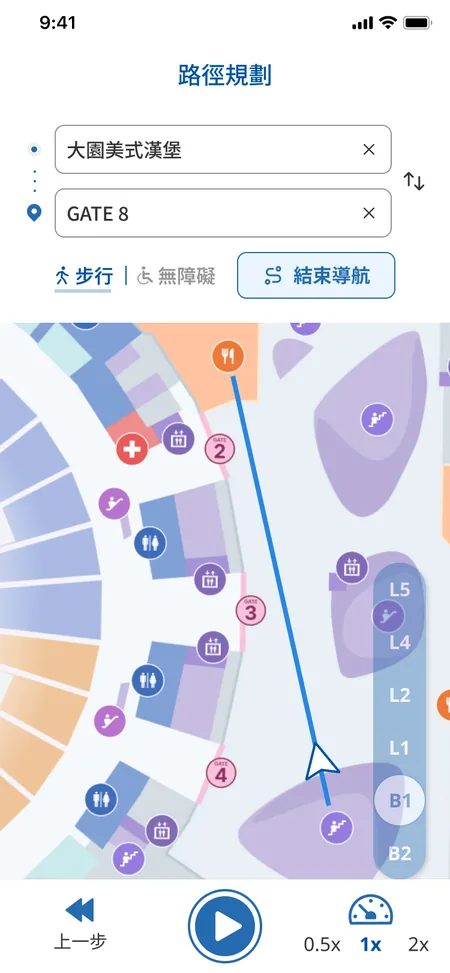
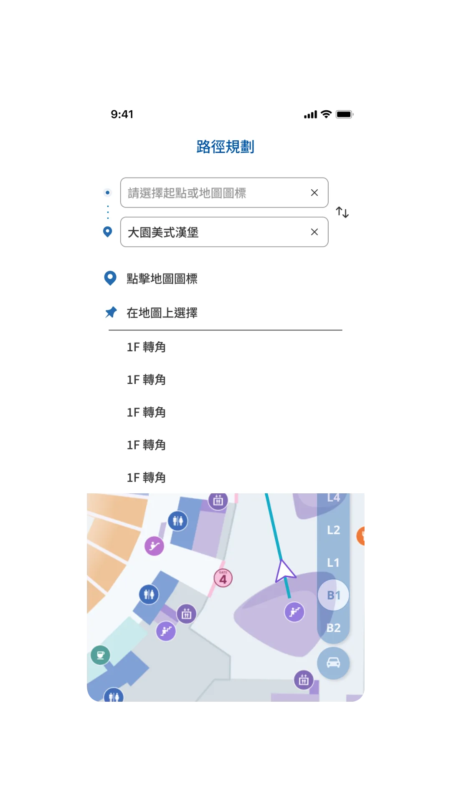
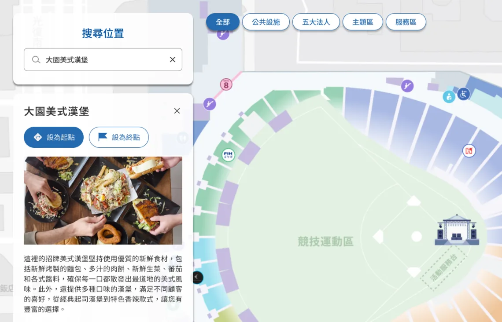

Foxconn Carnival
Wayfinding
- UI/UX design
- Map design
- App and web UI
A wayfinding guide for Foxconn employees and their families attending the company carnival at Taipei Dome. Visitors can find booths and facilities, choose a starting point and destination, and preview their route. Available within Foxconn’s employee app and on the web, the guide provides route planning and simulation rather than live, location-based navigation.
Visit live site ↗

What I did
I contributed to the information architecture and user flows. I designed the search, route planning, and location details interfaces, along with the wayfinding map. I also documented shared components and UI guidelines for the app and web versions.
To address the client’s requirement for accessible routes, I proposed a selector for switching between walking and accessible route modes. The PM defined the location categories, supplied or verified booth locations and route data, and proposed route simulation and automatic floor switching.
From search results to route planning
Visitors need to find booths and facilities across a large venue. I designed the search interface and results list around these location categories. From a selected result, visitors can set the location as their starting point or destination and view the route.



Adding accessible routes without making visitors start over
I placed the route mode selector and simulation button in a single row to keep related controls together and leave more room for the map. I also proposed preserving the selected starting point and destination when switching modes, so visitors could compare routes without entering the same locations again.

Once a route is set, visitors can play the simulation and adjust its speed. The map switches floors automatically as the route moves between levels. I designed the controls for playing the simulation and adjusting its speed.
Simplifying engineering drawings for visitor navigation
The engineering drawings included structural details that were unnecessary for visitor wayfinding. After the engineers marked key areas and facilities, I simplified the map to emphasize information visitors needed, while keeping it aligned with the location data used for routing.
I used color, markers, and icons to distinguish restrooms, elevators, entrances, and stairs. I confirmed each subsidiary’s booth location with the PM.


Adapting location details for app and web
I used different panel layouts to balance location details with map visibility. In the app, selecting a location opens an expandable bottom sheet with its details and options to set it as the starting point or destination. Visitors can drag the sheet upward to reveal more information. On the web, a left-side panel displays the details alongside the map.

Launch and on-site checks
The guide launched for the carnival on January 24, 2025. My deliverables included the app and web interfaces, the wayfinding map, and Figma UI guidelines. After launch, I used the guide on site at Taipei Dome.
Reflection
The brief called for accessible routes but left the interaction approach open. I focused on keeping the map visible and preserving the selected locations when visitors switched modes.